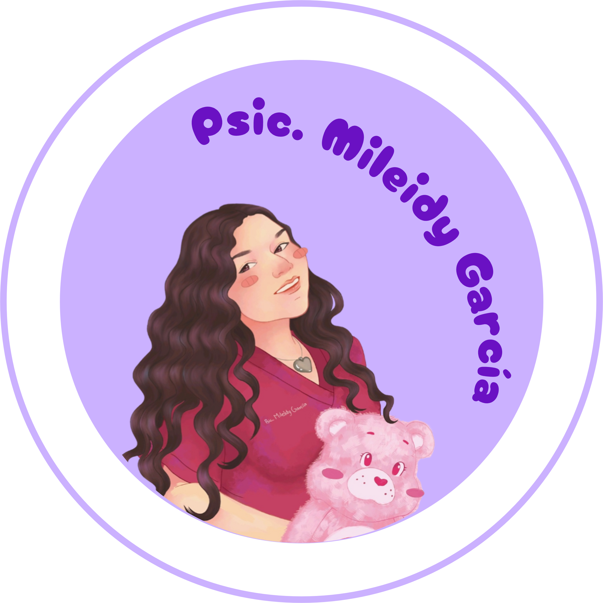
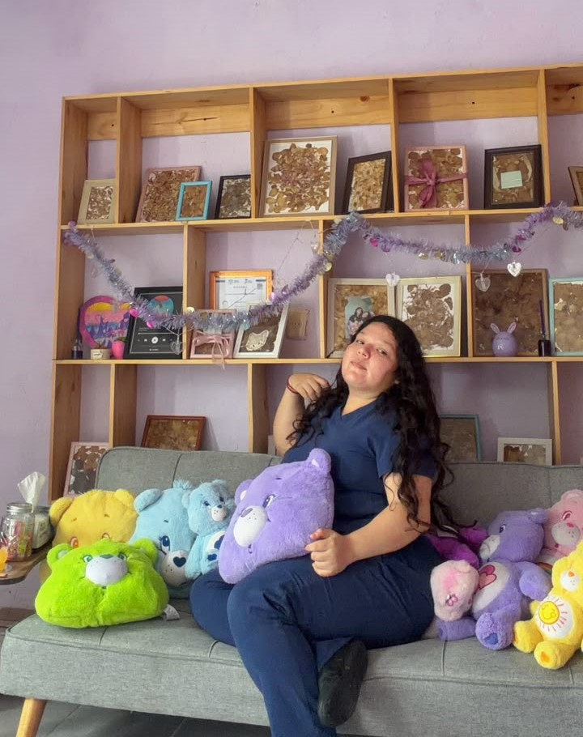

Escucha y comprensión
Un espacio confidencial para expresar lo que estás viviendo sin juicios.
Consultorio psicológico en Tepic, Nayarit
Soy la Psicóloga Mileidy García. Brindo atención psicológica con un enfoque cognitivo-conductual y humanista, adaptado a tus necesidades y a tu proceso personal.


Tu psicóloga
Brindo atención psicológica en Tepic, Nayarit, desde un enfoque cognitivo-conductual y humanista. Acompaño cada proceso con escucha, respeto y herramientas prácticas adaptadas a tu momento personal.
Mi objetivo es ofrecerte un espacio seguro y confidencial en el que puedas comprenderte mejor y avanzar a tu propio ritmo.
Cédula profesional: 14092227
Acompañamiento profesional
Cada proceso es diferente. La atención parte de una escucha respetuosa, objetivos claros y herramientas que puedas aplicar en tu vida cotidiana.
Un espacio confidencial para expresar lo que estás viviendo sin juicios.
Trabajamos en metas acordadas según tus necesidades y el momento que atraviesas.
Estrategias para comprender pensamientos, emociones y conductas.
¿Te has sentido sin ánimo, sin energía o estancado?
Puedes encontrar un espacio profesional para comprender lo que estás viviendo y trabajar en los cambios que necesitas, a tu propio ritmo.
Conoce a tu psicóloga
Atención psicológica desde una perspectiva cognitivo-conductual y humanista.
Cédula profesional: 14092227
Experiencias compartidas
★★★★★
“Excelente servicio y trato humano.”
★★★★★
“Muy buena atención, la mejor.”
★★★★★
“Excelente profesional, la recomiendo ampliamente.”
Comunícate para consultar disponibilidad, modalidad de atención y resolver tus dudas antes de agendar.
Escribir por WhatsApp